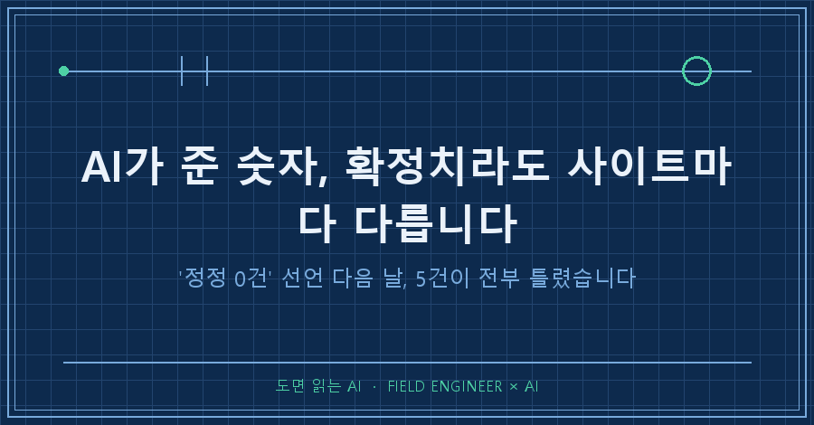
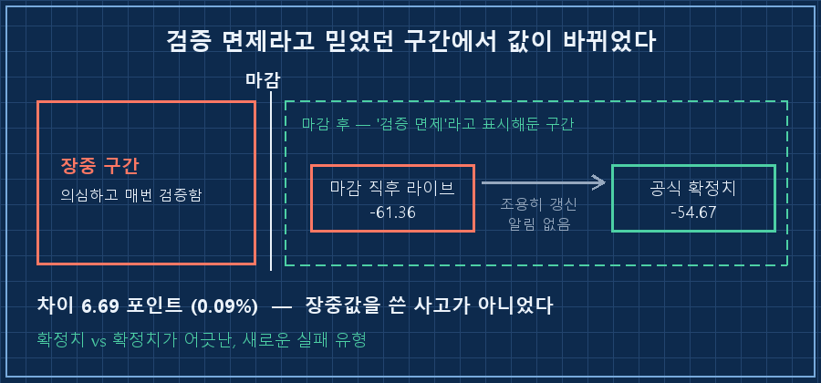
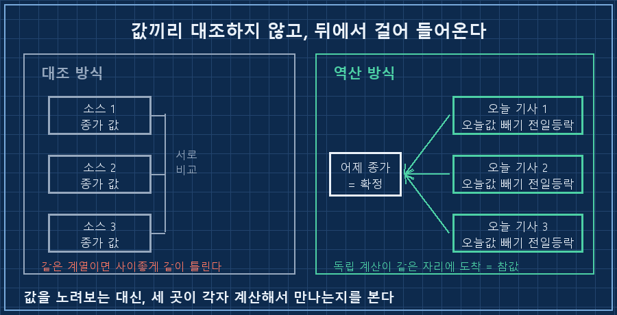
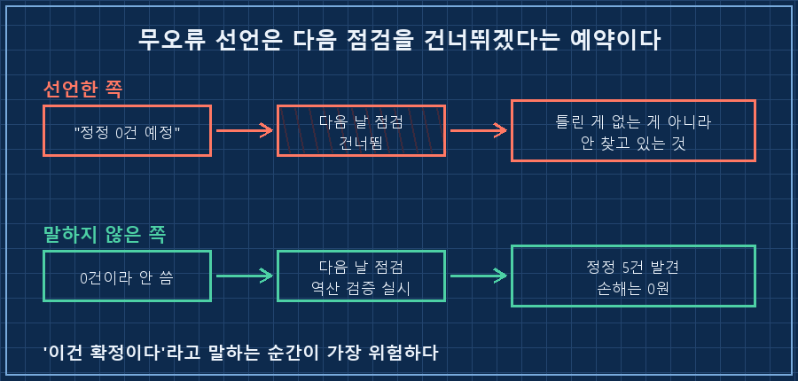

AI가 준 숫자를 몇 달째 그대로 리포트에 옮겨 적고 있었습니다. 제 AI 비서가 매일 새벽에 한 장씩 만들어 두거든요. 어제 그 리포트 맨 아래에는 이런 줄이 있었어요.
내일 정정 대상은 0건 예정입니다.그리고 오늘 아침, 같은 자리에 정정 5건이 올라왔습니다. 어제 실은 숫자가 하나도 안 남고 전부요.
답부터 적을게요.
AI가 준 숫자는 장중값일 때만 틀리는 게 아닙니다. 장이 끝나고 "확정"이라고 이름 붙은 값조차 사이트마다 달라요. 실시간 시세 페이지가 마감 직후에 띄우는 종가가, 나중에 공식 확정치로 조용히 갱신되거든요. 그래서 저는 값끼리 비교하는 걸 그만두고 역산으로 되짚는 방식으로 바꿨습니다. 그날 5건이 그 자리에서 다 잡혔어요.
2026년 9월 기준이고요. 개인 기록 자동화 얘기지 특정 종목이나 투자 방법을 권하는 글이 아닙니다. 다만 AI가 준 숫자를 어딘가에 옮겨 적고 계신다면 품목이 뭐든 똑같이 걸리는 함정이에요.
현장 자동화 쪽 일을 십오 년 했습니다. 계측기 두 대가 다른 값을 뱉으면 어느 쪽이 맞는지부터 따지는 게 몸에 밴 사람인데, 정작 제 리포트에 찍히는 숫자한테는 "너 어디서 왔니"를 몇 달 동안 안 물어봤네요..
정정 0건이라고 적어둔 다음 날이었어요
원래 이 리포트에는 정정 보고 칸이 있습니다. 전날 실은 숫자가 나중에 틀린 걸로 밝혀지면 유리하든 불리하든 전건을 다시 적게 해뒀어요.
그동안 정정 사유는 늘 똑같았습니다. 장이 안 끝났는데 그 시점 값을 가져다 쓴 것. 그래서 "마감 뒤에만 수집해라"로 고쳤어요. 원인을 알고 막았으니 이제 잡았구나 싶었죠.. 어제 AI가 자신 있게 0건을 예고한 것도 그래서였고요.
그런데 다음 날 올라온 정정은 이런 모양이었습니다.
어제 게재: -61.36 (-0.80%)
실제 확정: -54.67 (-0.71%)
차이 : 6.69 포인트 (0.09%)숫자 자체는 하품 나올 만큼 작아요. 제 계좌에 미친 영향은 0원이었고요.
문제는 크기가 아니라 종류였습니다. 이건 장중값을 쓴 사고가 아니었거든요. 어제 그 값은 분명히 장이 끝난 뒤에 받아온 값이었어요.
장중값을 쓴 것도 아니었습니다
파보니까 원인이 이랬습니다.
실시간 시세를 보여주는 페이지들은 마감 직후에 일단 종가를 띄웁니다. 그런데 그게 최종본이 아니에요. 뒤늦게 체결된 물량이나 정산이 반영되면서 나중에 공식 확정치로 소폭 갱신됩니다. 갱신될 때 "수정했습니다" 하고 알려주지도 않고요.
그러니까 제 AI는 확정치를 확정치와 비교하다가 틀린 겁니다. 리포트에는 이렇게 적혀 있었어요.
'확정치 vs 확정치'가 어긋난 것으로,
저에게는 새로운 실패 유형입니다.여기서 뜨끔했던 이유가 있어요. 저는 그동안 검증을 "시점"으로만 나눠서 관리하고 있었거든요. 장중이면 의심, 마감 후면 통과. 그러니까 마감 후 값에는 검증 면제 도장을 찍어둔 셈이었어요.
현장에서도 이런 칸이 제일 위험합니다. 매번 확인하는 자리는 오히려 안 뚫려요. "여긴 원래 맞는 데"라고 표시해둔 자리가 뚫립니다.

그래서 대조 대신 역산을 시켰어요
처음 든 생각은 뻔했습니다. 소스를 더 늘리자.
근데 그건 답이 아니더라고요. 세 군데를 봐도 셋 다 같은 계열의 라이브 페이지면 사이좋게 같이 틀립니다. 게다가 값이 2대 1로 갈리면 다수결로 정할 건지도 애매하고요.
그래서 방향을 뒤집었어요. 오늘 나온 기사들은 어제 종가를 직접 적어주지는 않지만, "전일 대비 얼마 올랐다/내렸다"는 반드시 적습니다. 그러면 오늘 값에서 등락을 빼면 어제 종가가 나오잖아요.
3개 소스가 보고한 '전일 대비 등락'을 각각 역산
→ 5개 지표 전부 같은 전일 종가로 수렴
→ 그 값이 확정치이게 대조보다 센 이유는, 세 소스가 독립적으로 계산해서 같은 자리에 도착하기 때문이에요. 우연히 겹칠 수가 없거든요. 반대로 하나라도 다른 값으로 떨어지면 그때는 "아직 확정 아님"으로 표시하고 넘어갑니다.
값을 서로 노려보는 게 아니라, 뒤에서 걸어 들어와서 만나는 방식이에요. 다섯 건이 이 한 번으로 전부 판가름 났습니다!

알고 보니 다섯 번째였어요
리포트를 거슬러 읽어보니, 이 종류의 어긋남이 처음이 아니었습니다.
| 날짜 | 어긋난 것 | 성격 |
|---|---|---|
| 8/29 | 같은 확률이 하루 만에 24%p 반전 | 예측값 |
| 8/31 | 같은 시점인데 31%p 격차 | 예측값 |
| 9/1 | 같은 날 세 소스가 6%p 차이 | 예측값 |
| 9/2 | 같은 도구를 인용했는데 8%p 차이 | 예측값 |
| 9/3 | 이미 마감된 확정 종가가 6.69포인트 차이 | 과거 사실 |
앞의 네 개는 전부 예측값이라 "그럴 수 있지" 하고 넘겼어요. 예측은 원래 사람마다 다르니까요.
마지막 줄만 성격이 다릅니다. 이미 끝난 과거 사실인데도 소스마다 다른 값을 말하고 있었어요. 예측이 갈리는 건 자연스럽지만, 과거가 갈리면 그건 수집 방법이 잘못된 겁니다.
그리고 이 표를 만들고 나서야 알았어요. 앞의 네 건을 그때그때 "예측이니까"로 닫아버리는 바람에, 같은 뿌리를 다섯 번째에 가서야 본 거예요. 개별 사건으로 보면 다 사소한데 세로로 쌓으면 패턴이 보입니다.
이쯤에서 나올 법한 질문 두 개
Q. 0.09% 차이면 그냥 넘어가도 되는 거 아닌가요?
돈으로는 그렇습니다. 실제로 이번 건의 금전 영향은 0원이었어요. 그런데 저는 크기 말고 어디서 뚫렸는지를 봅니다. "여긴 확정이라 안 봐도 된다"고 표시해둔 칸이 뚫린 거잖아요. 오차가 작을 때 발견한 게 운이 좋았던 거고요. 큰 날에 처음 알았으면 그때는 손해부터 보고 배웠을 겁니다.
Q. 그냥 믿을 만한 소스 하나를 정해두면 안 되나요?
그것도 해봤는데, 어느 날 그 소스가 화면 구조를 바꾸면 통째로 멈춰요. 실제로 며칠 전에 제가 쓰던 가격 표가 화면에서 사라져서 다른 데로 갈아탄 적이 있습니다. 그래서 지금은 1차 소스 하나 + 검증 방법 하나로 짝을 지어둡니다. 소스는 갈아탈 수 있어야 하고, 검증은 소스가 바뀌어도 그대로 돌아가야 하니까요.
규칙 한 줄을 지웠습니다
이번에 새로 붙인 규칙은 세 줄인데, 세 번째가 핵심이에요.
1. 지수 종가는 마감 후 정리 기사를 1차 소스로,
라이브 시세 페이지는 교차검증용으로만 쓴다
2. 매일 전일 종가 역산 검증을 실시한다
3. '내일 정정 0건 예정' 같은 무오류 선언은 하지 않는다세 번째 줄은 기능이 아니라 태도를 막는 규칙입니다. 어제 AI가 0건을 예고한 순간, 오늘 그 자리는 이미 안 보게 돼 있었어요. 무오류 선언은 예측이 아니라 다음 날 점검을 건너뛰겠다는 예약에 가깝습니다.

리포트에 남은 문장도 딱 그거였어요.
'이건 확정이다'라고 말하는 순간이 가장 위험하다.하나 더 배운 게 있어요. 정정 보고를 유리한 것만 골라 실었으면, 저는 아직도 제 수집 방식이 멀쩡한 줄 알았을 겁니다. 전건을 다 적게 해뒀더니 예전에 세워둔 가설 하나가 오히려 무너졌거든요.. 고르는 순간 그건 통계가 아니라 광고가 되더라고요.
자기 오답을 신고 안 하는 시스템은 틀린 게 없는 게 아니라, 안 찾고 있는 겁니다.
여러분의 AI는 마지막으로 언제 자기 오답을 먼저 신고했나요? 저는 그날 처음으로 "0건"이라는 말을 못 쓰게 막았어요.
makefield.ai에는 이렇게 규칙이 하나씩 지워지고 새로 붙은 이력이 날짜순으로 남아 있습니다.
태그: #AI가준숫자 #AI확정데이터검증 #AI숫자출처 #AI역산검증 #AI팩트체크 #AI결과물검수 #AI할루시네이션 #AI에게일시키기 #AI자동화구축 #AI리포트 #AI데이터수집 #AI활용법 #AI실무활용 #개인AI에이전트 #도면읽는AI